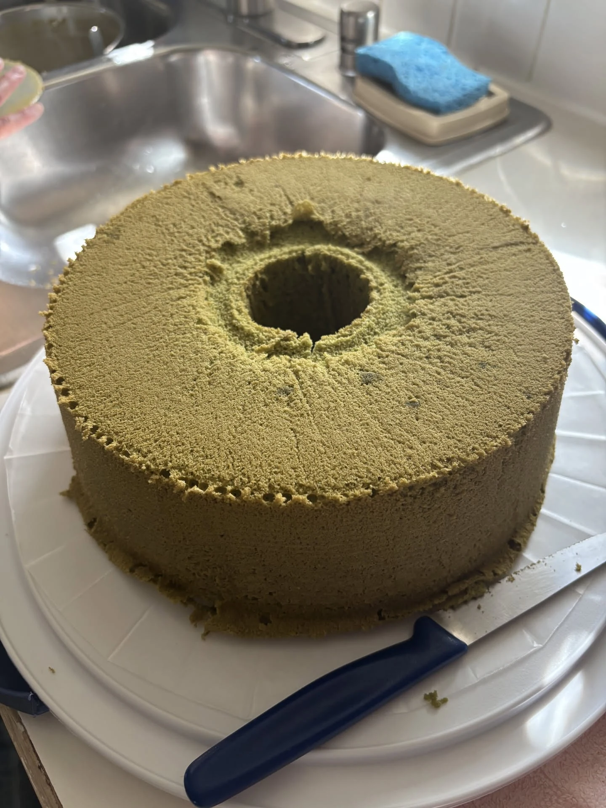

Egg yolks, oil, cake flour and sifted matcha in one bowl. Egg whites whipped to stiff peaks in another. Folded together until just mixed, then baked in a tube pan.
- Pan
- Tube pan
- Oven
- 275°F for 40 minutes, then 300°F for 20 minutes
- Cooling
- Inverted, about 2 hours, until cool to touch
Ingredients
Bowl 1
- 10 egg yolks
- ½ cup of organic sugar
- ¾ cup of oil
- 1 cup of organic cake flour
- 15–20 grams of matcha powder For each gram of matcha powder used, remove the same amount of cake flour.
Bowl 2
- 10 egg whites
- ½ cup of organic sugar
- ½ tsp cream of tartar
Method
Bowl 1
- Break egg yolks.
- In 3 equal portions, whip in sugar until dissolved (batter should be yellowish-white).
- Add oil, flour, and matcha powder (sift the flour and matcha powder):
- Divide flour and matcha powder in 4 equal portions, oil in 3 equal portions.
- Add flour matcha portion, mix well.
- Add oil, mix well.
- Repeat until all portions mixed.
Bowl 2
- Preheat oven at 275°F, so by the time we finish mixing bowl 1 & 2 we could immediately place it into oven.
- In clean bowl, beat egg whites and sugar until dissolved.
- Add cream of tartar. Whip until stiff peaks.
Bowl 2 & Bowl 1
- Fold bowl 2 into bowl 1, until just mixed.
- Pour into tube-pan.
Baking time!
- Preheat oven at 275°F, then bake for 40 minutes.
- After 40 minutes, raise temp to 300°F and continue for another 20 minutes.
- Invert to cool.
- Remove from tube-pan when cool to touch (~2 hours).
Notes
- Matcha replaces cake flour gram for gram: for each gram of matcha powder used, remove the same amount of cake flour.
- Start preheating while you prepare the bowls, so the batter can go straight into the oven once mixed.
- The bake has two stages: 40 minutes at 275°F, then another 20 minutes at 300°F.
- Cool the cake inverted, and take it out of the tube pan once it is cool to touch, about 2 hours.